Final Project: Automated Latte Making Machine
(Milk Dispensing and Frothing Team)
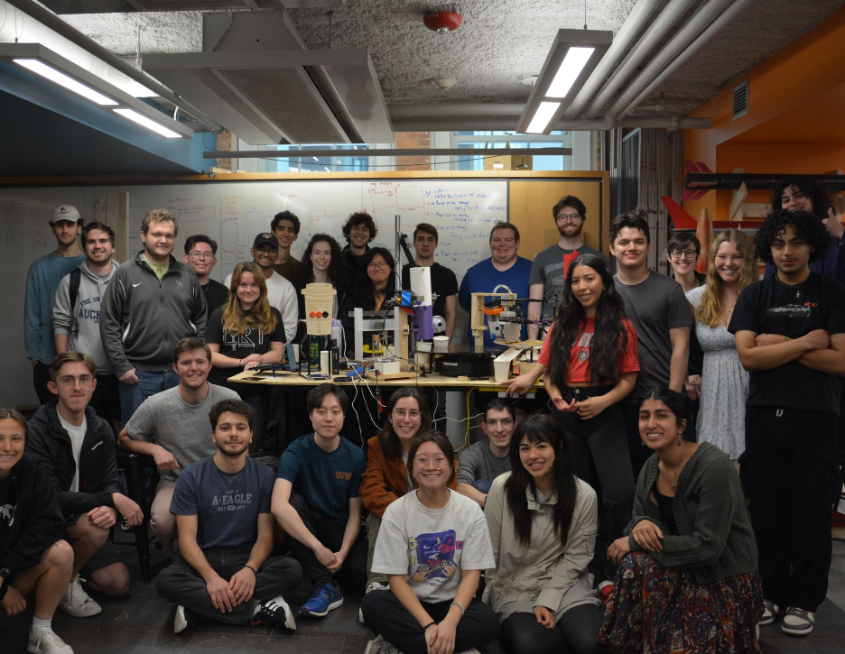
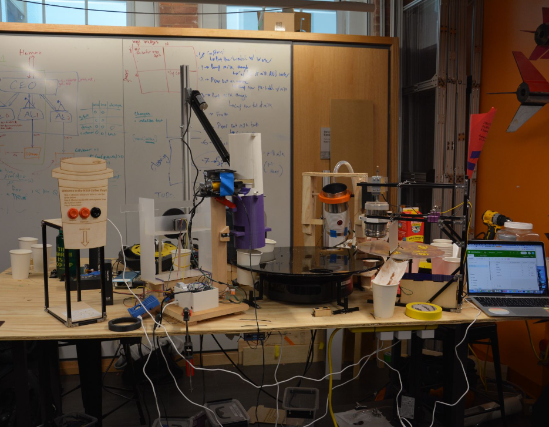
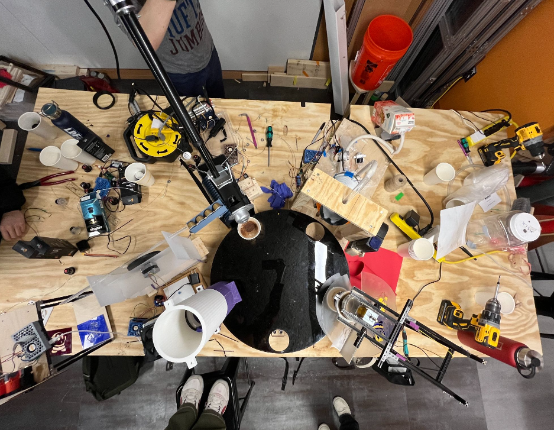
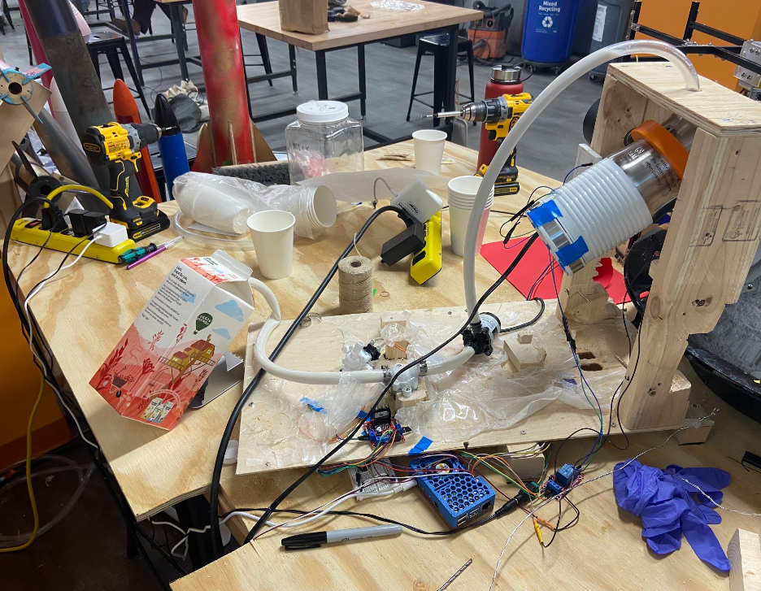
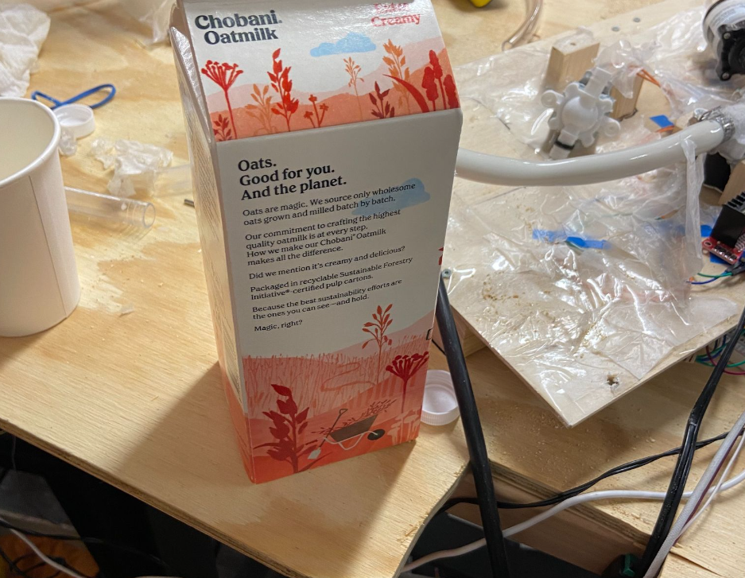
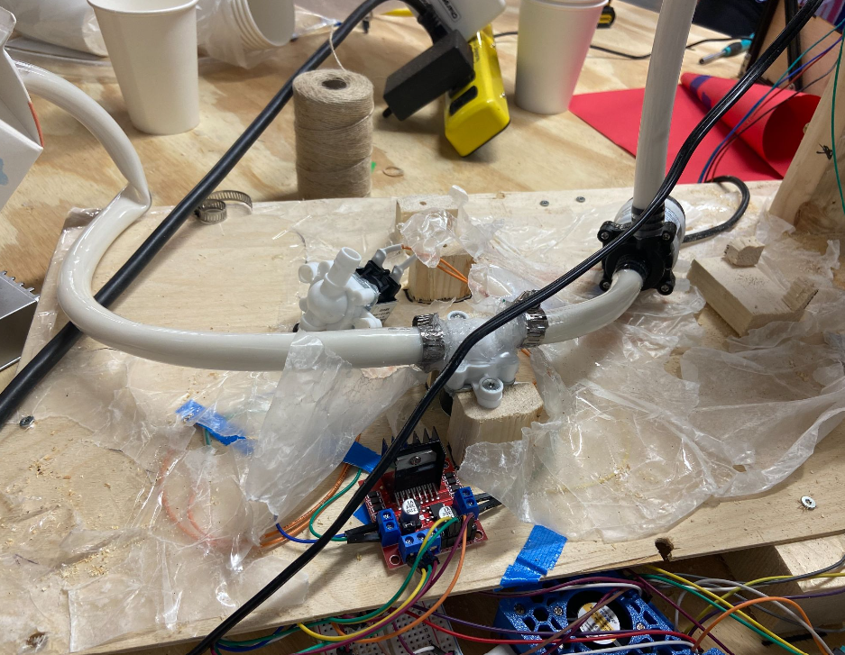
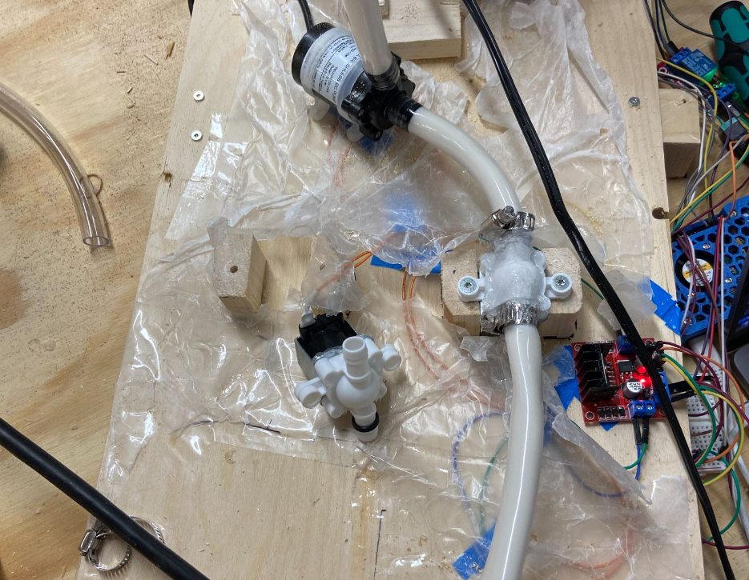
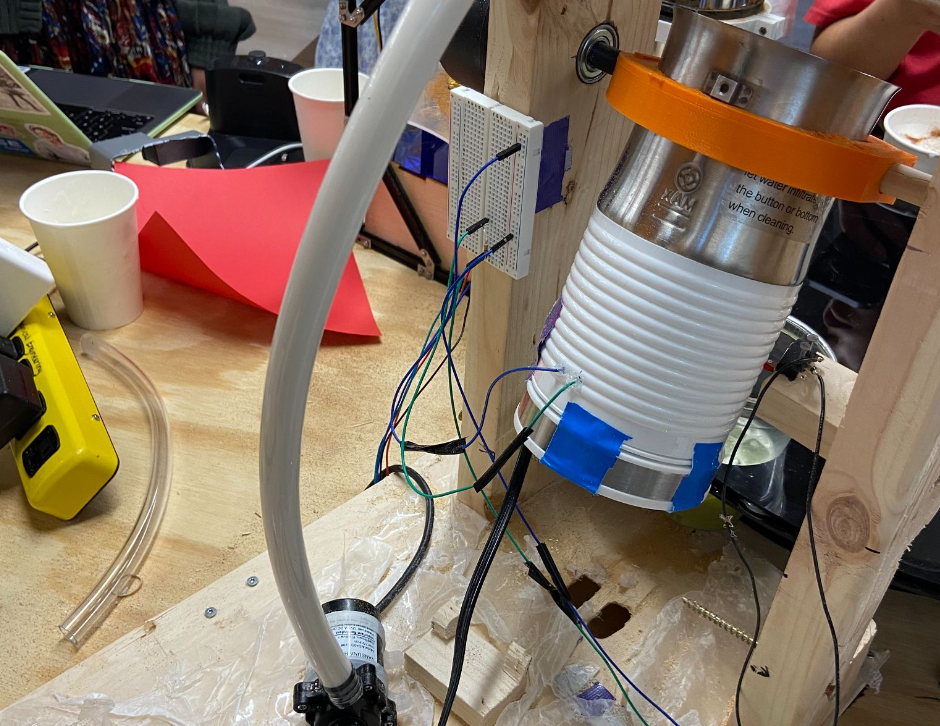
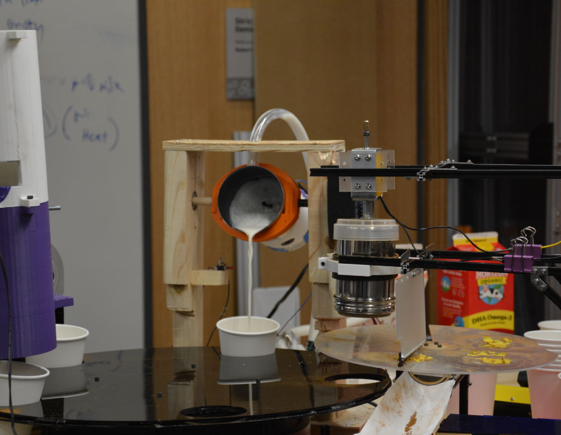
Goal:
As a class (27 people) work as a team to build an automated latte making machine that could make up to three lattes in a row without running out of materials. The latte should consist of coffee from a Mixpresso coffee making machine, steamed/frothed milk, and cinnamon art in a Mario Kart themed pattern.
We were given approximately one month to complete this task and a $500 budget.
Solution:
What we were given:
- Mixpresso Coffee Making Machine and coffee pods for the machine
- Raspberry Pis
- iRobot Create 3s
- Assorted electronic components including limit switches and Raspberry Pi cameras
We began the process by identifying the different tasks that had to be accomplished and then dividing the class into teams to accomplish those tasks. The groups we chose to divide into were:
TRANSPORT
- Dispense an empty cup onto the transport mechanism to start the process and create a transport mechanism to move the cup between the different stations and finally deliver the cup to the customer
COFFEE
- Load coffee pod into machine, start the machine, and dispense coffee into an empty cup
MILK
- Dispense milk into a milk steamer/frother, start the frother, and dispense the frothed milk into the coffee cup
LATTE ART
- Dispense cinnamon onto the coffee - the cinnamon should be dispensed in the shape of a Mario Kart character
Here's an image of some of our original brainstorming from the first couple classes:
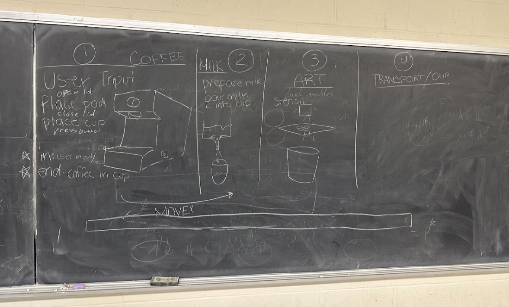
Each team had a lot of freedom to decide how they went about accomplishing their tasks. However, in order to make the integration of the different parts of the robot easier, we specified what each team would receive and what their deliverable at the end of their process was expected to be. We also decided that in order to coordinate movement between teams, teams would read and write from/to an AirTable managed by the transport team.
I chose to work on the milk team. We broke our process up into the following subgoals:
- Pump milk from a milk bottle into the frother
- Froth the milk
- Pour the frothed milk into the coffee cup
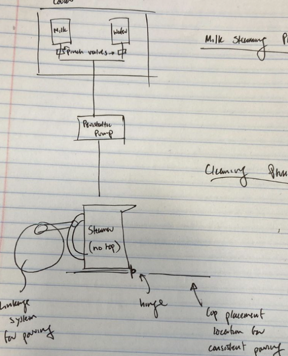
We originally were also tasked with cleaning the milk line with water after we had delivered the frothed milk. Our original plan to handle that challenge was to have the lines from the milk and water containers be joined together with a Y-fitting and have the pump sit beneath the fitting. A pinch valve on the milk and water lines above the Y-fitting would control which liquid (milk or water) would be pumped into the frother. However, we ended up dropping this requirement due to the fact that we purchased inexpensive pinch valves one of which failed and both of which had smaller than specified barbed fittings (thus our tubing did not fit correctly and we had to come up with a rushed solution that involved o-rings).
We did learn something from our battles with the pinch valves, however: make sure you read the reviews on Amazon before you make a purchase - both of the issues that we ran into were mentioned in the reviews :(
We did end up accomplishing the other goals though :)
Here are some pictures showing the final product for the milk team:
Milk is pumped directly from a milk bottle. Our class voted to use oak milk
The milk runs through the one remaining good pinch valve and the pump. The pump had to be primed before it could run so we had to pre-fill the tubing with milk before starting the process
The milk is then pumped into the frother and a relay is used to turn on the frother and run the frothing process
Once the milk has been frothed, it is poured into the cup on top of the coffee.
The final milk team product!!! :)
And here's a video made by one of my classmates (Infania Pimentel) that shows how the entire system that the class made works together: